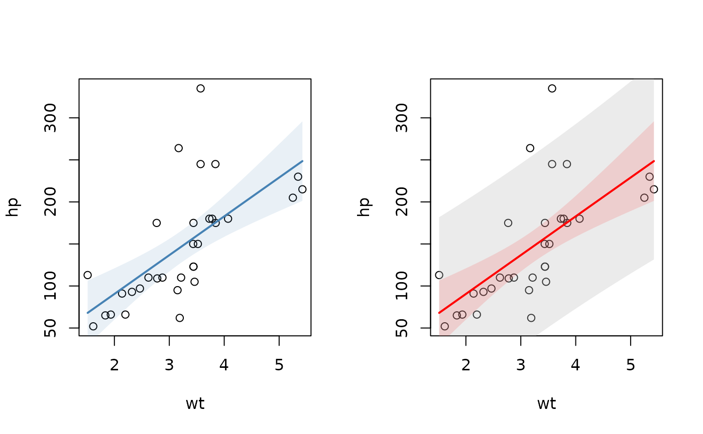
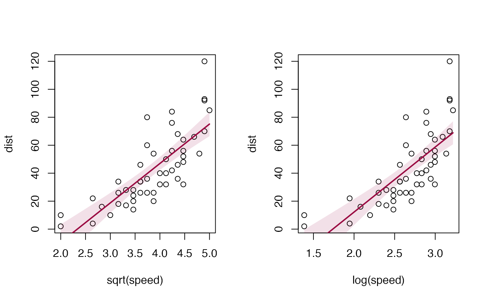

lines.lm.RdAdd a linear regression line to an existing plot. The function first calculates the prediction of a lm object for a reasonable amount of points, then adds the line to the plot and inserts a polygon with the confidence and, if required, the prediction intervals.
In addition to abline the function will also display polynomial models.
# S3 method for lm lines(x, col = Pal()[1], lwd = 2, lty = "solid", type = "l", n = 100, conf.level = 0.95, args.cband = NULL, pred.level = NA, args.pband = NULL, ...)
| x | linear model object as result from lm(y~x). |
|---|---|
| col | linecolor of the line. Default is the color returned by |
| lwd | line width of the line. |
| lty | line type of the line. |
| type | character indicating the type of plotting; actually any of the |
| n | number of points used for plotting the fit. |
| conf.level | confidence level for the confidence interval. Set this to |
| args.cband | list of arguments for the confidence band, such as color or border (see |
| pred.level | confidence level for the prediction interval. Set this to NA, if no prediction band should be plotted.
Default is |
| args.pband | list of arguments for the prediction band, such as color or border (see |
| ... | further arguments are not used specifically. |
It's sometimes illuminating to plot a regression line with its prediction, resp. confidence intervals over an existing scatterplot. This only makes sense, if just a simple linear model explaining a target variable by (a function of) one single predictor is to be visualized.
nothing
Andri Signorell <andri@signorell.net>
par(mfrow=c(1,2)) plot(hp ~ wt, mtcars) lines(lm(hp ~ wt, mtcars), col="steelblue") # add the prediction intervals in different color plot(hp ~ wt, mtcars)r.lm <- lm(hp ~ wt, mtcars) lines(r.lm, col="red", pred.level=0.95, args.pband=list(col=SetAlpha("grey",0.3)) )# works with transformations too plot(dist ~ speed, cars) lines(lm(dist ~ poly(speed, degree=2), cars), col=hred)